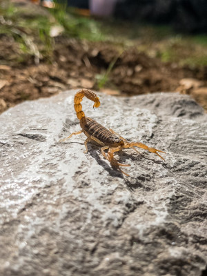
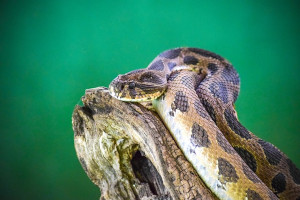

Últimas notícias
Animais peçonhentos
Serpentes, escorpiões, aranhas e abelhasAnimais peçonhentos são caracterizados por glândulas que produzem e expelem veneno pelo mecanismo instintivo de defesa ou caça. Possuem um aparelho inoculador que injeta esse veneno em suas presas, e variam de acordo com as espécies, como as presas, agulhões, quelíceras que são respectivamente, das serpentes, dos escorpiões, e das aranhas.
No Brasil, os acidentes causados por esses animais constituem um problema grave de saúde pública e ocorrem principalmente em locais com enchentes, entulhos, ou alta vegetação.
Eles representam cerca de 100 mil notificações por ano, segundo o Ministério da Saúde. E os animais que mais ocasionam são algumas espécies de serpentes, abelhas e escorpiões.
Eles sobrevivem em locais úmidos e injetam seu veneno pelo aparelho inoculador. Existem tipos diferentes toxinas que são inoculadas pelos animais peçonhentos a outros seres vivos e geram diferentes reações.

Primeiros socorros 🚑
- Lavar o local da picada com água e sabão.
- Não sugar o veneno com a boca
- Não fazer torniquete ou garrote.
- Não furar, cortar, queimar, espremer ou fazer sucção no local da ferida.
- Não aplicar folhas, pó de café ou terra (pode provocar infecções).
- Não ingerir bebida alcoólica, querosene ou fumo, como é costume em algumas regiões do país.
- Levar a vítima imediatamente ao serviço de saúde mais próximo para que possa receber o tratamento adequado em tempo.
Fonte: Biblioteca virtual em saúde
Atendimentos em PE
| Município | Unidade de saúde | Endereço |
|---|---|---|
| Arco verde | Hospital Regional Ruy de Barros Correia | Av. Agamenon Magalhães, s/nº - Centro |
| Caruaru | Hospital Mestre Vitalino | BR-104, 175 - Luiz Gonzaga |
| Ouricuri | Hospital Regional Fernando Bezerra | Rua Teobaldo Gomes Tôrres, nº 510 - Centro |
| Petrolina | Hospital Universitário da Universidade Federal do Vale do São Francisco | Av. José de Sá Maniçoba, s/nº - Centro |
| Recife | Hospital da Restauração | Avenida Agamenon Magalhães, s/nº - Derby |
| Salgueiro | Hospital Regional Inácio de Sá | R. Antônio Alençar Sampaio, nº 346 - Planalto |
| Serra talhada | Hospital Professor Agamenon Magalhães | R. Cmte. Superior, nº 871 - Centro |